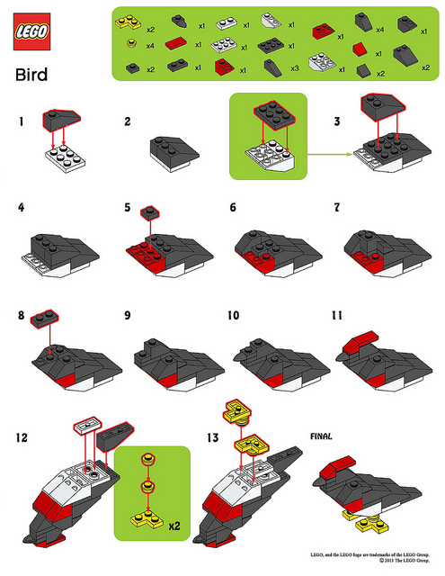

Concise and Simple

Over the coming weeks I will publish a set of articles that are part of a series called "concise and simple". Each article will be about an area of computing that interests me but will be no longer that 1500 words nor assume previous knowledge of the subject under scrutiny.
I have two aims:
- To create resources that may be useful for others.
- To explain in a simple yet engaging style the essence of a highly technical subject.
The first aim is an act of community service, the second is a personal challenge.
I hope to publish the first article in the next few days: "The Internet ~ Concise and Simple".
Image credit: © 2011 Bill Toenjes under a Creative Commons license.